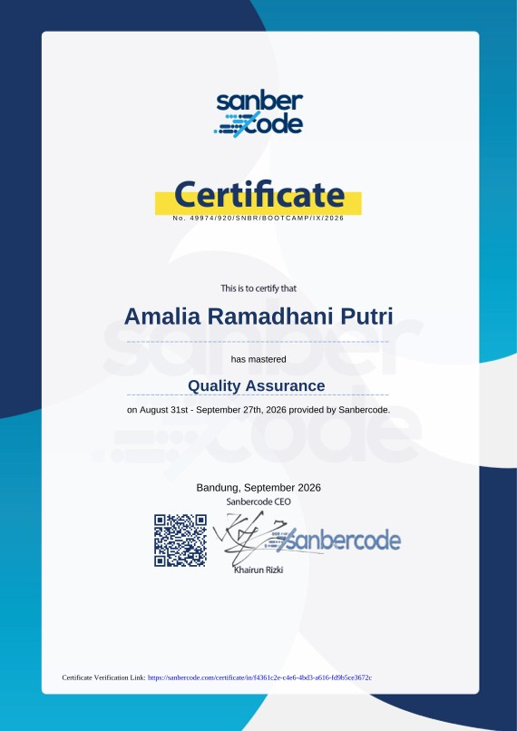
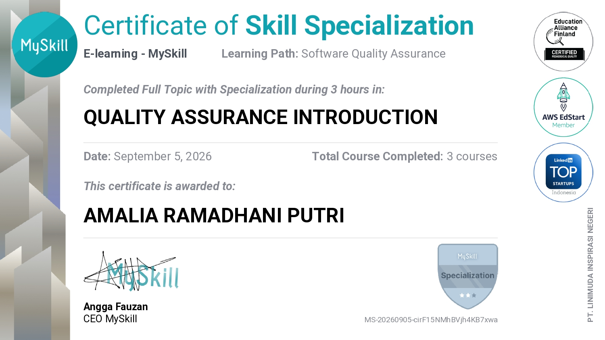

Manual testing
Test plan, test scenario, test case, bug reporting, dan functional testing berdasarkan acceptance criteria.
Halo, saya
Saya tertarik pada software testing dan sedang mengembangkan kemampuan dalam manual testing, API testing, SQL, dan test automation.
Saya lulusan S1 Teknik Informatika Universitas Muhammadiyah Malang (2022–2026) yang berfokus pada software quality assurance.
Lewat proyek praktik, saya menyusun test plan, test scenario, dan test case dari requirement dan acceptance criteria, lalu melakukan functional testing, mencatat bug, dan menguji REST API. Saya juga mulai menulis automated test dengan Cypress.
Skripsi saya membahas optimasi proses pembayaran dan pencatatan SPP digital di SMK Ngunut dengan pendekatan Business Process Reengineering dan BPMN, termasuk usability testing dan prototype website.
Universitas Muhammadiyah Malang
S1 Teknik Informatika, IPK 3.86Software Quality Assurance
Manual testing, API testing, dasar automationTest automation
JavaScript dan CypressTest plan, test scenario, test case, bug reporting, dan functional testing berdasarkan acceptance criteria.
Menguji endpoint REST dengan Postman dan memverifikasi status code, response body, serta error message.
Automated test untuk aplikasi web dengan Cypress, memakai Page Object Model, fixtures, assertions, dan intercept.
Memahami SDLC, STLC, dan Agile. Tools yang saya gunakan sehari-hari dalam proyek.
Soft skill: manajemen waktu, kerja sama tim, problem solving, komunikasi, attention to detail.
Dokumentasi pengujian saya susun di Google Sheets. Klik "Lihat spreadsheet" untuk membukanya langsung di halaman ini.

Sanbercode
SDLC, STLC, Agile, test plan, test case, bug reporting, serta UI test automation dengan Cypress dan JavaScript.
Lihat sertifikat
MySkill
SDLC, STLC, Agile, QA Career Opportunities.
Lihat sertifikatTerbuka untuk posisi Junior QA, magang, dan diskusi seputar testing.